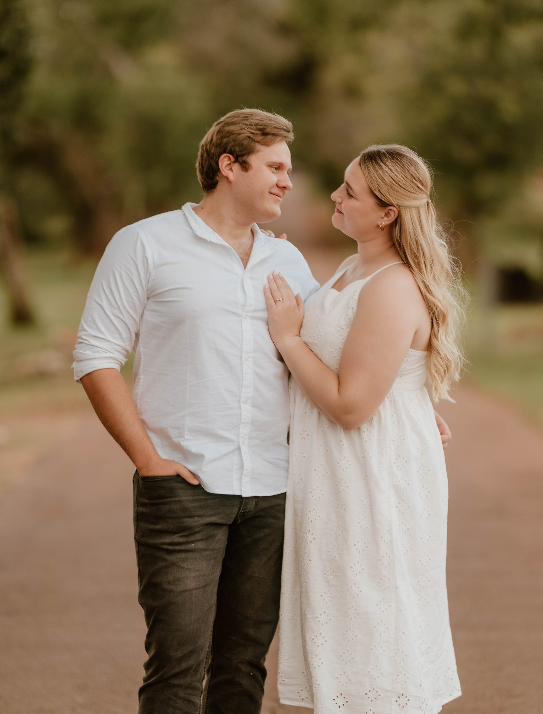

Bring & Braai
Our celebration is a true South African Bring & Braai. Side dishes are provided — the main meal is the braai food you bring to cook on the fire with us. Please also bring your own drinks for the day.
until we say "I do"

You're Invited
Dear Friends & Family,
With joyful hearts, we invite you to share in our wedding day as we say "I do" and begin our life together. Your presence would mean the world to us.
— Nathan & Janke
The Venue
Portion 32, Farm Rietfontein
Garsfontein Rd, Bashewa, 0084
Getting There
Stofpad Skuur is on a farm east of Pretoria, off Garsfontein Road (M30) past Tierpoort — about a 30–40 minute drive from Pretoria East. The last stretch is a quiet country road, so give yourself a little extra time and keep an eye on the GPS.
The Day
Everything you need to know to celebrate the day with us.
Our celebration is a true South African Bring & Braai. Side dishes are provided — the main meal is the braai food you bring to cook on the fire with us. Please also bring your own drinks for the day.
Saturday, 27 March 2027
Ceremony & reception at Stofpad Skuur. Full timings will be shared here closer to the date.
Late March is early autumn in Pretoria — warm, sunny days around 25 °C, cooling to 13–15 °C in the evening. Pack a light layer for after sunset by the fire.
A lodge is available on or near the venue for guests who'd like to stay over. For accommodation or travel questions, reach out to Janke or Nathan directly.
The Timeline
Here's how the day will unfold. Exact times are being finalised and will be confirmed here closer to the date.
Arrive at Stofpad Skuur, find your seat and settle in with a welcome drink as everyone gathers.
We exchange vows and say "I do" — the part we've been counting down to. Witness us become husband and wife.
The fires are lit and the coals are ready. Cook your braai alongside ours, share a table, and toast to the newlyweds.
Speeches, cake and first dances — then the floor is open. Dance the night away with us under the stars.
Exact times to be confirmed
What to Wear
Smart & formal — we'd love for everyone to dress up and feel great in the photos with us.
We're not fussy about colours, so wear whatever makes you feel wonderful — just please, no white (that one's reserved for the bride), and definitely no kortbroek en plakkies.
Dress to impress and dance the night away
Good to Know
Bring whatever you love to cook over the coals — meat, boerewors, sosaties, veggies, whatever makes your braai feel like home. Side dishes are provided, so just focus on your main. Fires and grids will be ready and waiting.
Yes please! It's a bring-your-own-drinks day, so pack whatever helps you celebrate in style. We'd recommend bringing a cooler box and some ice to keep everything cold.
The full timeline is still being finalised — exact times will be posted here closer to the date. As a rule of thumb, aim to arrive a little before the ceremony so you're settled when we begin. Remember the venue is on a country road, so leave a bit of extra travel time.
We've kept our guest list intimate, so our celebration is for invited guests only — we're not able to accommodate additional plus-ones or children. We hope this gives you the chance to relax and enjoy the day with us. Thank you for understanding!
Yes — there's space to park at the farm. Follow the signs and any directions from the team on the day.
There's a lodge available on or near the venue for guests who'd like to stay the night. It's worth arranging accommodation early, as space may be limited.
Smart & formal — dress up and feel great in the photos with us. Just no white (reserved for the bride) and definitely no kortbroek en plakkies. Evenings get cool, so a light layer is a good idea.
More details will be added here as the day gets closer.
Will you join us?
We can't wait to celebrate with you. Please let us know whether you'll be joining us by completing our RSVP form.
Out of love for an intimate day, we're only able to host the guests named on your invitation.